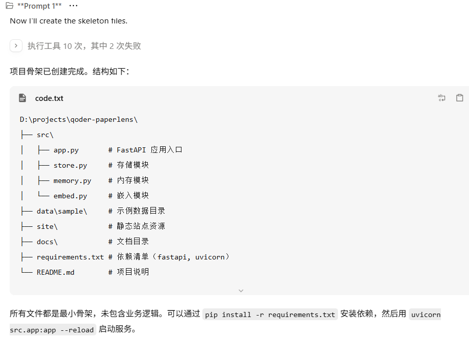
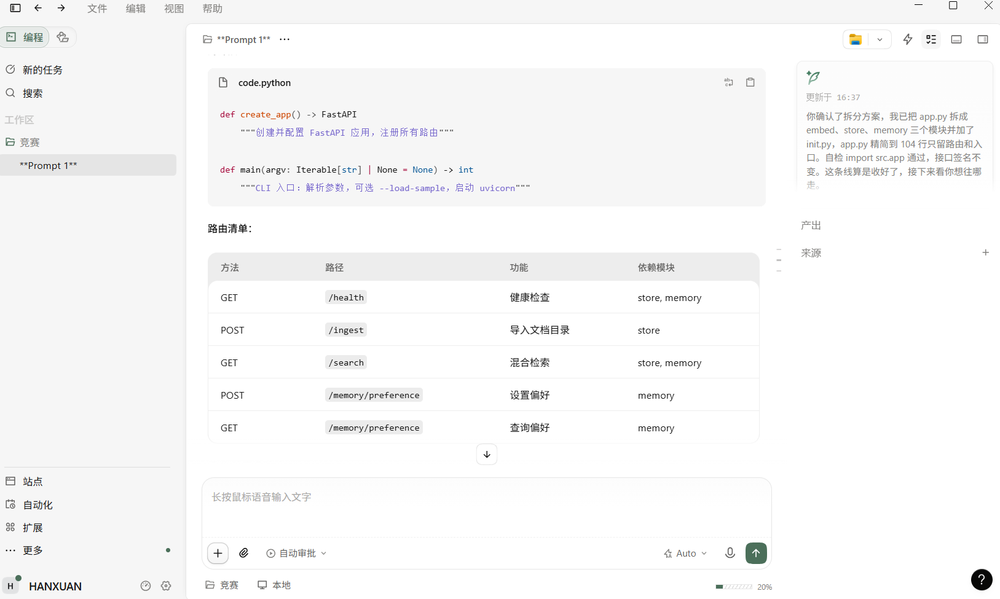
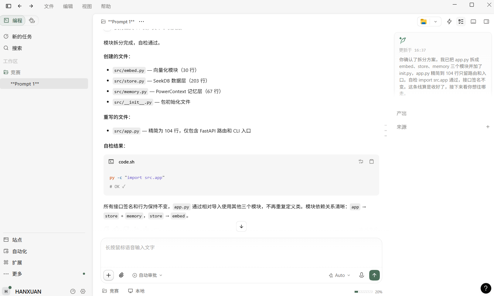
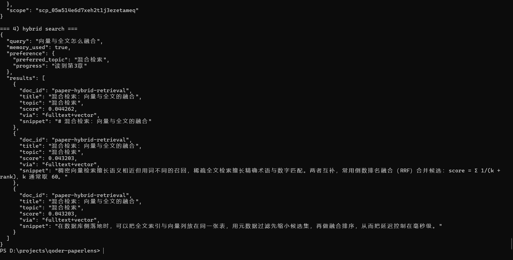

把论文和笔记导入 seekdb，用混合检索秒找段落；用 PowerContext 记住你的研究方向与进度，越用越懂你。
PaperLens 是一个文献与笔记混合检索助手，结合 seekdb（向量 + 全文 + 结构化混合检索）和 PowerContext（scoped memory）两项技术，解决科研资料管理中的三大痛点：找不到、搜不准、重复说。
项目路径：qoder/paperlens/
PaperLens 把这三件事合起来：混合检索找到段落，记忆记住你的偏好和进度，下次直接接着来。
Markdown / txt 按段落切块写入 chunks 表，超长段落按句号再切，保留出处。
全文（IK 分词）+ 向量余弦两路召回，RRF 融合排序，支持 topic 过滤与加权。
研究方向与阅读进度写入 PowerContext scoped memory，检索时自动带上偏好加权。
每条结果返回文档 ID、标题、片段与命中来源（fulltext / vector / 两者）。
| 技术 | 在项目中的实际作用 | 可核对点 |
|---|---|---|
| seekdb | 唯一的数据存储与检索层：chunks 表同时建 FULLTEXT(body) WITH PARSER ik 与 VECTOR(384) 列，一次查询同时用到全文匹配、余弦距离与元数据过滤。 |
/search 返回的 via 字段；服务端 SQL 日志 |
| PowerContext | 记忆层：/memory/preference 写入研究方向与进度，/search 每次先读回偏好并对命中主题加权（topic boost）。 |
/search 返回的 memory_used、preference 字段 |
| Qoder | 承担需求拆解、代码生成、调试与网站生成；开发记录见仓库 docs/qoder-dev-log.md。 |
开发记录截图 + 账号 UID |
git clone https://github.com/HAN-XUAN123/PowerContext-2026.git cd PowerContext-2026/qoder/paperlens python -m venv .venv && source .venv/bin/activate # Windows: .venv\Scripts\activate pip install -r requirements.txt # 启动 seekdb（Docker） docker run -d --name seekdb -p 2881:2881 oceanbase/seekdb:latest # 配置环境变量 export SEEKD_DB_HOST=127.0.0.1 SEEKD_DB_PORT=2881 SEEKD_DB_USER=root export POWERCX_BASE_URL=http://127.0.0.1:8000 # 导入示例资料并启动服务 python -m src.app --load-sample python -m src.app # http://127.0.0.1:8077
以下为实测数据，可按 docs/verify.md 中的步骤复现：
ok，连接 127.0.0.1:2881ok，scope scp_05w514e6d7xeh2t1j3ezetameqcurl -X POST http://127.0.0.1:8077/memory/preference \
-H 'Content-Type: application/json' \
-d '{"topic":"混合检索","progress":"读到第3章"}'
curl http://127.0.0.1:8077/memory/preference
返回结果：
preferred_topic = 混合检索progress = 读到第3章curl "http://127.0.0.1:8077/search?q=向量与全文怎么融合&top_k=3"
返回结果：
memory_used = truepreference.preferred_topic = 混合检索命中主题"混合检索"的结果分数变化：
0.03270.0443说明 PowerContext 的偏好确实被用于检索排序。




qoder/paperlens/1522293088924088README.mddocs/verify.mddocs/qoder-dev-log.md